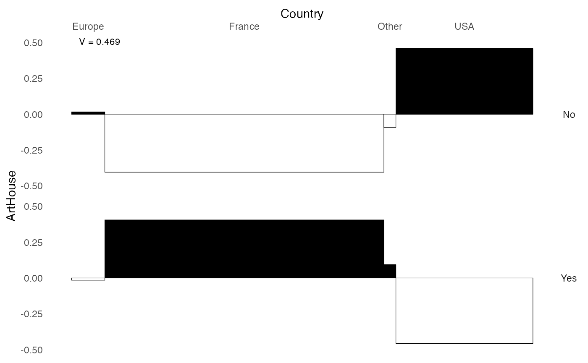

Descriptive analysis of statistical associations with GDAtools
Nicolas Robette
2021-05-19
Source:vignettes/Tutorial_descr.Rmd
Tutorial_descr.Rmd
GDAtools package provides some functions dedicated to the description of statistical associations between variables. They are based on effect size measures (also called association measures).
All these measures are built from simple concepts (correlations, proportion of variance explained), they are bounded (between -1 and 1 or between 0 and 1) and are not sensitive to the number of observations.
The measures of global association are the following.
For the relationship between two categorical variables: the Cramér’s V which, unlike the chi-square, for example, is not sensitive to the number of observations or the number of categories of the variables. It varies between 0 (no association) and 1 (perfect association). Squared, it can be interpreted as the share of variation shared between two variables.
For the relationship between two numerical variables: Kendall’s (tau) or Spearman’s (rho) rank correlations, which detect monotonic relationships between variables, and not only linear ones as is the case with Pearson’s linear correlation. They vary between -1 and 1. An absolute value of 0 indicates no association, an absolute value of 1 a perfect association. The sign indicates the direction of the relationship.
For the relationship between a categorical variable and a numerical variable: the square of the correlation ratio (eta²). It expresses the proportion of the variance of the numerical variable “explained” by the categorical variable and varies between 0 and 1.
In addition to measures of global association, we also use measures of local association, i.e. at the level of the categories of the variables.
For the relationship between two categorical variables: the phi coefficient measures the attraction or repulsion in a cell of a contingency table. It varies between -1 and 1. An absolute value of 0 indicates an absence of association, an absolute value of 1 a perfect association. There is attraction if the sign is positive, repulsion if the sign is negative. Squared, phi is interpreted as the proportion of variance shared by the two binary variables associated with the categories studied. Unlike the test value, phi is not sensitive to the sample size.
For the relationship between a categorical variable and a numerical variable: the point biserial correlation measures the magnitude of the difference between the means of the numerical variable according to whether or not one belongs to the category studied. It varies between -1 and 1. An absolute value of 0 indicates no association, an absolute value of 1 a perfect association. The sign indicates the direction of the relationship. When squared, point biserial correlation can be interpreted as the proportion of variance of the numerical variable “explained” by the category of the categorical variable.
Note that if we code the categories of the categorical variables as binary variables with values of 0 or 1, the phi coefficient and the point biserial correlation are equivalent to Pearson’s correlation coefficient.
For more details on these effect size measurements, see: Rakotomalala R., « Comprendre la taille d’effet (effect size) »
In some functions of GDAtools, association measures can be completed by permutation tests, which are part of combinatorial inference and constitute a nonparametric alternative to the significance tests of frequentist inference. A permutation test is performed in several steps.
A measure of association between the two variables under study is computed.
The same measure of association is calculated from a “permuted” version of the data, i.e. by randomly “mixing” the values of one of the variables, in order to “break” the relationship between the variables.
Repeat step 2 a large number of times. This gives an empirical distribution (as opposed to the use of a theoretical distribution by frequentist inference) of the measure of association under the H0 hypothesis of no relationship between the two variables.
The result of step 1 is compared with the distribution obtained in 3. The p-value of the permutation test is the proportion of values of the H0 distribution that are more extreme than the measure of association observed in 1.
If all possible permutations are performed, the permutation test is called “exact”. In practice, the computation time required is often too important and only a part of the possible permutations is performed, resulting in an “approximate” test. In the following examples, the number of permutations is set to 100 to reduce the computation time, but it is advisable to increase this number to obtain more accurate and reliable results (for example nperm=1000).
To illustrate the statistical association analysis functions of GDAtools, we will use data on cinema. This is a sample of 1000 films released in France in the 2000s, for which we know the budget, the genre, the country of origin, the “art et essai” label, the selection in a festival (Cannes, Berlin or Venice), the average rating of intellectual critics (according to Allociné) and the number of admissions. Some of these variables are numerical, others are categorical.
'data.frame': 1000 obs. of 7 variables:
$ Budget : num 3.10e+07 4.88e+06 3.50e+06 1.63e+08 2.17e+07 ...
$ Genre : Factor w/ 9 levels "Action","Animation",..: 1 5 7 1 7 5 1 7 5 7 ...
$ Country : Factor w/ 4 levels "Europe","France",..: 4 2 2 1 2 2 4 4 2 4 ...
$ ArtHouse : Factor w/ 2 levels "No","Yes": 1 1 2 1 2 1 1 1 1 1 ...
$ Festival : Factor w/ 2 levels "No","Yes": 1 1 1 1 1 1 1 1 1 1 ...
$ Critics : num 3 1 3.75 3.75 3.6 2.75 1 1 1 3 ...
$ BoxOffice: num 1013509 24241 39376 6996996 493416 ...Relationship between two variables
The package offers several functions to study the statistical relationship between two variables, depending on the nature (categorical or numerical) of these variables.
Two categorical variables
The function assoc_twocat computes :
- the contingency table (numbers)
- the percentages, the row-percentages and the column-percentages
- the theoretical numbers, i.e. in a situation of independence
- the chi-square
- the Cramér’s V and the p-value of the corresponding permutation test
- the Pearson residuals
- the phi coefficients and the p-values of the corresponding permutation tests
- the global and local PEMs (Percentage of Maximum Deviation from Independence, see Cibois 1993)
- a summary table of these results
assoc.twocat(Movies$Country, Movies$ArtHouse, nperm=100)$freq
No Yes Sum
Europe 39 33 72
France 212 393 605
Other 6 20 26
USA 257 40 297
Sum 514 486 1000
$prop
No Yes Sum
Europe 3.9 3.3 7.2
France 21.2 39.3 60.5
Other 0.6 2.0 2.6
USA 25.7 4.0 29.7
Sum 51.4 48.6 100.0
$rprop
No Yes Sum
Europe 54.16667 45.83333 100
France 35.04132 64.95868 100
Other 23.07692 76.92308 100
USA 86.53199 13.46801 100
Sum 51.40000 48.60000 100
$cprop
No Yes Sum
Europe 7.587549 6.790123 7.2
France 41.245136 80.864198 60.5
Other 1.167315 4.115226 2.6
USA 50.000000 8.230453 29.7
Sum 100.000000 100.000000 100.0
$expected
No Yes
Europe 37.008 34.992
France 310.970 294.030
Other 13.364 12.636
USA 152.658 144.342
$chi.squared
[1] 220.1263
$cramer.v
[1] 0.4691762
$permutation.pvalue
[1] 0
$pearson.residuals
No Yes
Europe 0.3274474 -0.3367479
France -5.6123445 5.7717531
Other -2.0143992 2.0716146
USA 8.4449945 -8.6848595
$phi
No Yes
Europe 0.01541876 -0.01541876
France -0.40506773 0.40506773
Other -0.09258656 0.09258656
USA 0.45688150 -0.45688150
$phi.perm.pval
No Yes
Europe 3.256599e-01 3.256599e-01
France 1.095441e-36 0.000000e+00
Other 4.353349e-03 4.353349e-03
USA 0.000000e+00 2.367358e-43
$local.pem
No Yes
Europe 5.7 -5.7
France -51.6 51.6
Other -55.1 55.1
USA 72.3 -72.3
$global.pem
[1] 59.3
$gather
Var1 Var2 Freq prop rprop cprop expected std.residuals phi perm.pval local.pem
1 Europe No 39 0.039 0.5416667 0.07587549 37.008 0.3274474 0.01541876 3.256599e-01 5.7
2 France No 212 0.212 0.3504132 0.41245136 310.970 -5.6123445 -0.40506773 1.095441e-36 -51.6
3 Other No 6 0.006 0.2307692 0.01167315 13.364 -2.0143992 -0.09258656 4.353349e-03 -55.1
4 USA No 257 0.257 0.8653199 0.50000000 152.658 8.4449945 0.45688150 0.000000e+00 72.3
5 Europe Yes 33 0.033 0.4583333 0.06790123 34.992 -0.3367479 -0.01541876 3.256599e-01 -5.7
6 France Yes 393 0.393 0.6495868 0.80864198 294.030 5.7717531 0.40506773 0.000000e+00 51.6
[ reached 'max' / getOption("max.print") -- omitted 2 rows ]
The function ggassoc_crosstab presents the contingency table in graphical form, with rectangles whose area corresponds to the numbers and whose color gradient corresponds to the attractions/repulsions (phi coefficients). The Cramér’s V can be displayed in a corner of the graph. Here, the “art et essai” label is clearly over-represented among French films and under-represented among American films.
ggassoc_crosstab(Movies, ggplot2::aes(x=Country, y=ArtHouse), max.phi=0.8)
The function ggassoc_phiplot proposes another way to represent the attractions/repulsions. The width of the rectangles corresponds to the numbers of the variable x, their height to the phi coefficients. The rectangles are colored in black when there is attraction, in white when there is repulsion.
ggassoc_phiplot(Movies, ggplot2::aes(x=Country, y=ArtHouse))
One categorical variable and one numerical variable
The assoc_catcont function computes:
- the squared correlation ratio (eta²) and the p-value of the corresponding permutation test
- the point biserial correlations and the p-values of the corresponding permutation tests
assoc.catcont(Movies$Country, Movies$Critics, nperm=100)$eta.squared
[1] 0.0169216
$permutation.pvalue
[1] 4.463575e-09
$cor
Europe France Other USA
0.011 0.102 0.036 -0.128
$cor.perm.pval
Europe France Other USA
4.053856e-01 1.911473e-03 1.244059e-01 4.630861e-05
The function ggassoc_boxplot represents the relationship between the variables in the form of box-plots and/or “violin” distributions. The eta² value is displayed in a corner of the graph.
ggassoc_boxplot(Movies, ggplot2::aes(x=Country, y=Critics))
Two numerical variables
The function assoc_twocont computes the Kendall and Spearman rank correlations and the Pearson linear correlation, as well as the p-values of the corresponding permutation tests.
assoc.twocont(Movies$Budget, Movies$BoxOffice, nperm=100) pearson spearman kendall
value 0.6053018 0.7084613 0.5184719
permutation.pvalue 0.0000000 0.0000000 0.0000000
The function ggassoc_scatter represents the relationship between the two variables in the form of a scatterplot, with an approximation by smoothing (with the “Generalized Additive Model” method). Kendall’s tau is displayed in a corner of the graph.
ggassoc_scatter(Movies, ggplot2::aes(x=Budget, y=BoxOffice))
Relationships between one variable Y and a set of variables X
Often, not just two variables are studied, but a larger set of variables. When one of these variables has the status of an “explained” variable, one generally uses regression models or, possibly, supervised learning models (see the vignette of the moreparty package for an example). However, it is essential to know all the bivariate relations of the dataset before moving to an “all else being equal” approach.
It should be noted that if we do this work in a meticulous way, adding eventually the descriptive analysis of the relationships between three or four variables, we often realize that the surplus of knowledge brought by the regression models is quite limited.
The function assoc.yx computes the global association between Y and each of the variables of X, and for all pairs of variables of X.
assoc.yx(Movies$BoxOffice, Movies[,-7], nperm=100)$YX
variable measure association permutation.pvalue
1 Genre Eta2 0.173 0.000
2 ArtHouse Eta2 0.075 0.000
3 Country Eta2 0.048 0.000
4 Budget Kendall's tau 0.518 0.000
5 Critics Kendall's tau 0.006 0.374
6 Festival Eta2 0.000 0.743
$XX
variable1 variable2 measure association permutation.pvalue
1 Genre ArtHouse Cramer's V 0.554 0.000
2 Country ArtHouse Cramer's V 0.469 0.000
3 Genre Country Cramer's V 0.275 0.000
4 ArtHouse Festival Cramer's V 0.229 0.000
5 Budget Country Eta2 0.287 0.000
6 Budget Genre Eta2 0.281 0.000
7 ArtHouse Critics Eta2 0.236 0.000
8 Budget ArtHouse Eta2 0.181 0.000
9 Genre Critics Eta2 0.090 0.000
10 Festival Critics Eta2 0.041 0.000
11 Budget Critics Kendall's tau -0.178 0.000
12 Genre Festival Cramer's V 0.183 0.000
13 Country Critics Eta2 0.017 0.000
14 Budget Festival Eta2 0.003 0.073
15 Country Festival Cramer's V 0.035 0.710
The functions catdesc and condesc allow to go into more detail about the relationships, by going to the category level.
catdesc deals with the cases where Y is a categorical variable. For a categorical variable X1, it computes, for a given category of Y and a category of X1 :
- the percentage of the category of Y in the category of X1
- the percentage of the X1 category in the Y category
- the percentage of the X1 category in the whole sample
- the phi coefficient
The results are sorted by decreasing phi coefficient and can be filtered to keep only the associations above a given threshold (in absolute value).
For a numerical variable X2, for a given category of Y, it computes :
- the median of X2 in the category of Y
- the median of X2 in the whole sample
- the dispersion of X2 in the Y category
- the dispersion of X2 in the whole sample
- the point biserial correlation
Dispersion is measured by the “median absolute deviation” (MAD), which is the median of the absolute deviations from the median. The median and MAD are so-called “robust” indicators, i.e. not sensitive to outliers.
catdesc(Movies$Festival, Movies[,-5])$bylevel$Yes$categories
categories pct.ycat.in.xcat pct.xcat.in.ycat pct.xcat.global phi
2 ArtHouse.Yes 0.140 0.883 0.486 0.229
3 Genre.Drama 0.149 0.468 0.241 0.153
9 Genre.Other 0.115 0.039 0.026 0.024
10 Country.Europe 0.097 0.091 0.072 0.021
11 Country.France 0.081 0.636 0.605 0.019
12 Genre.ComDram 0.087 0.169 0.149 0.016
14 Genre.Action 0.079 0.169 0.165 0.003
16 Country.Other 0.077 0.026 0.026 0.000
18 Genre.SciFi 0.061 0.039 0.049 -0.013
23 Country.USA 0.064 0.247 0.297 -0.032
24 Genre.Animation 0.022 0.013 0.046 -0.046
25 Genre.Horror 0.000 0.000 0.025 -0.046
26 Genre.Documentary 0.026 0.026 0.077 -0.055
27 Genre.Comedy 0.027 0.078 0.222 -0.100
29 ArtHouse.No 0.018 0.117 0.514 -0.229
$continuous.var
variables median.x.in.ycat median.x.global mad.x.in.ycat mad.x.global cor
1 Critics 3.5 2.9 0.6 0.6 0.204
3 BoxOffice 236910.7 138608.8 212598.2 137253.1 0.008
5 Budget 7689956.0 7040470.9 4865250.9 5920656.2 -0.057condesc deals with the cases where Y is a numerical variable. For a categorical variable X1, it computes :
- the median of Y in the category of X1
- the median of Y in the whole sample
- the dispersion of Y in the category of X1
- the dispersion of Y in the whole sample
- the point biserial correlation
The results are sorted by decreasing point biserial correlation and can be filtered to keep only associations above a given threshold (in absolute value).
For the numerical variables of X, it calculates the Kendall’s tau.
condesc(Movies$BoxOffice, Movies[,-7], nperm=100)$variables
variable measure association permutation.pvalue
1 Genre Eta2 0.173 0.000
2 ArtHouse Eta2 0.075 0.000
3 Country Eta2 0.048 0.000
4 Budget Kendall's tau 0.518 0.000
5 Critics Kendall's tau 0.006 0.439
6 Festival Eta2 0.000 0.788
$categories
categories median.y.in.xcat median.y.global mad.y.in.xcat mad.y.global cor
9 Genre.SciFi 944784 138609 853626 137253 0.294
14 ArtHouse.No 298718 138609 257715 137253 0.274
2 Genre.Animation 954956 138609 853018 137253 0.211
13 Country.USA 356692 138609 286508 137253 0.192
1 Genre.Action 291945 138609 247538 137253 0.087
10 Country.Europe 153755 138609 150015 137253 0.068
17 Festival.Yes 228749 138609 207635 137253 0.008
5 Genre.Comedy 230615 138609 210550 137253 0.004
3 Genre.Other 249037 138609 231954 137253 -0.005
16 Festival.No 129629 138609 127957 137253 -0.008
12 Country.Other 64893 138609 46042 137253 -0.013
8 Genre.Horror 293118 138609 176131 137253 -0.015
[ reached 'max' / getOption("max.print") -- omitted 5 rows ]
The darma function presents the results in a form close to that of a table of results of a regression.
When the variable Y is numerical, the function computes :
- for numerical X variables, Kendall’s tau and the p-value of the corresponding permutation test
- for the categories of the categorical X variables, the median of Y in the category, the point biserial correlation and the p-value of the corresponding permutation test
darma(Movies$BoxOffice, Movies[,-7], nperm=100)| variable | category | median | association | perm.pvalue |
|---|---|---|---|---|
| Budget | NA | 0.518 | 0.000 | |
| Genre | Action | 301483.7 | 0.087 | 0.004 |
| Animation | 990790.2 | 0.211 | 0.000 | |
| Other | 254002.8 | -0.005 | 0.442 | |
| ComDram | 96221.7 | -0.114 | 0.000 | |
| Comedy | 236703.8 | 0.004 | 0.433 | |
| Documentary | 13823.2 | -0.108 | 0.000 | |
| Drama | 51111.1 | -0.162 | 0.000 | |
| Horror | 296015.2 | -0.015 | 0.336 | |
| SciFi | 989158.5 | 0.294 | 0.000 | |
| Country | Europe | 161441.5 | 0.068 | 0.009 |
| France | 82312.8 | -0.211 | 0.000 | |
| Other | 64304.0 | -0.013 | 0.351 | |
| USA | 366233.7 | 0.192 | 0.000 | |
| ArtHouse | No | 307344.0 | 0.274 | 0.000 |
| Yes | 47084.8 | -0.274 | 0.000 | |
| Festival | No | 134006.6 | -0.008 | 0.406 |
| Yes | 236910.7 | 0.008 | 0.415 | |
| Critics | NA | 0.006 | 0.362 |
When the variable Y is categorical, the function computes :
- for numerical X variables, the point biserial correlation and the p-value of the corresponding permutation test
- for the categories of the categorical X variables, the percentage of Y in the category, the phi coefficient and the p-value of the corresponding permutation test.
darma(Movies$Festival, Movies[,-5], target=2, nperm=100)| variable | category | percent | association | perm.pvalue |
|---|---|---|---|---|
| Budget | NA | -0.057 | 0.079 | |
| Genre | Action | 7.9 | 0.003 | 0.443 |
| Animation | 2.2 | -0.046 | 0.082 | |
| Other | 11.5 | 0.024 | 0.268 | |
| ComDram | 8.7 | 0.016 | 0.355 | |
| Comedy | 2.7 | -0.100 | 0.001 | |
| Documentary | 2.6 | -0.055 | 0.032 | |
| Drama | 14.9 | 0.153 | 0.000 | |
| Horror | 0.0 | -0.046 | 0.096 | |
| SciFi | 6.1 | -0.013 | 0.391 | |
| Country | Europe | 9.7 | 0.021 | 0.292 |
| France | 8.1 | 0.019 | 0.269 | |
| Other | 7.7 | 0.000 | 0.407 | |
| USA | 6.4 | -0.032 | 0.162 | |
| ArtHouse | No | 1.8 | -0.229 | 0.000 |
| Yes | 14.0 | 0.229 | 0.000 | |
| Critics | NA | 0.204 | 0.000 | |
| BoxOffice | NA | 0.008 | 0.722 |
Relationships between all variables in a set
Finally, the ggassoc_* functions are designed to be integrated in the plot matrices of the GGally package. It is thus possible to use them to represent in a single plot all the bivariate relations of a group of variables.
library(GGally)
ggpairs(Movies,
lower = list(continuous = ggassoc_scatter,
combo = ggassoc_boxplot,
discrete = ggassoc_crosstab),
upper = list(continuous = ggassoc_scatter,
combo = ggassoc_boxplot,
discrete = ggassoc_crosstab),
diag = list(continuous = wrap("diagAxis", gridLabelSize = 3),
discrete = wrap("diagAxis", gridLabelSize = 3)))